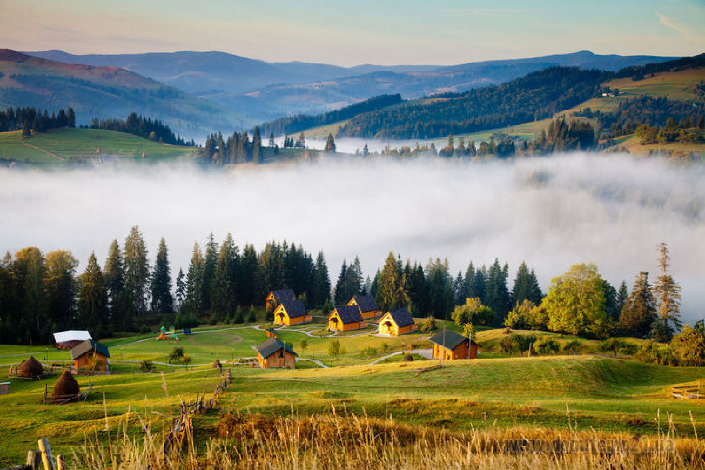
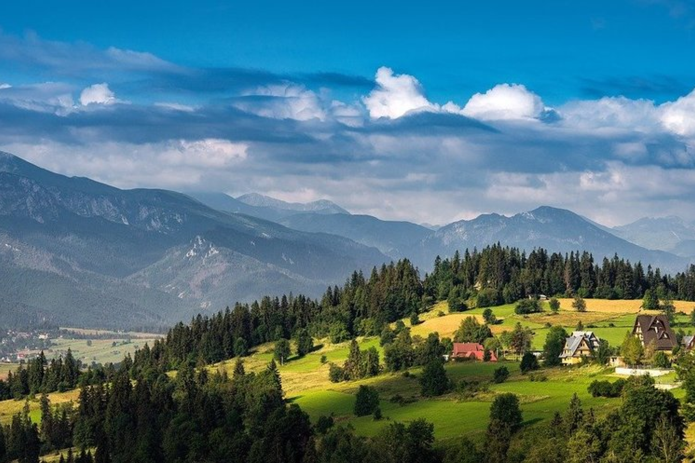

Цікавий туризм
Закарпаття – надзвичайна місцевість. А тому, як туристичний край,
може запропонувати своїм відвідувачам незабутні враження у будь-яку пору року.

Гірськолижні комплекси
Поїхати взимку на Закарпаття і не покататися на
лижах, це все одно, що не спробувати вина у Франції
або пива у Чехії чи Німеччині. Тобто можна, але для чого?
Тут є місця для найкращих зимових розваг, при чому як для екстремалів , так і для поціновувачів більш спокійного відпочинку.
Тут є місця для найкращих зимових розваг, при чому як для екстремалів , так і для поціновувачів більш спокійного відпочинку.

Спелеотуризм
На території Закарпаття відомо близько 50-ти печер .
Печери різні за довжиною – від кількох до 240 метрів.

Мотузкові парки
Ще одна особливість Закарпаття – мотузкові парки, де
відпочинок поєднується зі спортом, а результатом стають
чудовий настрій та приємні враження, що залишаються надовго

Кінний туризм
Для бажаючих, у Закарпатті багато організацій,
які надають послуги в сфері кінного туризму і пропонують цікаві програми.
Наприклад, кінні тури в традиційному сучасному сідлі, на санях по снігу взимку, або ж по високій траві у весняно-літній та осінній період. Прогулянки верхи тривають в залежності від підготовки і бажання туриста.
Наприклад, кінні тури в традиційному сучасному сідлі, на санях по снігу взимку, або ж по високій траві у весняно-літній та осінній період. Прогулянки верхи тривають в залежності від підготовки і бажання туриста.

Екстремальний туризм
Любителям подорожей на квадроциклах
пропонуються різноманітні за важкістю і протяжністю маршрути.

Рафтинг
Рафтинг по гірським річкам Закарпаття є
доволі екстремальним заняттям, що передбачає
певну долю ризику для життя та здоров’я учасників.
Однак при супроводі професійного гіда-інструктора,
дане заняття є відносно безпечним та доволі захоплюючим.

Парапланеризм
Парапланеризм – це не тільки захоплюючий та
неймовірно видовищний вид спорту, а й ще чудовий
активний відпочинок з друзями та сім’єю. У Закарпатті
є кілька гарних місць для польотів на парапланах.

Переглянути
Визначні місця
Закарпаття. Єдине, неповторне, ексклюзивне. Хто
хоч раз побував у нашому краї, завжди пам´ятатиме
кришталеву прозорість річок і неймовірну красу та
велич гір, що відлунюють дивовижною історією, розлитою
по замках, парках, вузьких вуличках , стертій віками блискучій бруківці.
Та назавжди залишить в своєму серці згадку про чудові місця які тут відвідали .

Та назавжди залишить в своєму серці згадку про чудові місця які тут відвідали .
Водоспад Шипіт
В самому серці Карпат в підніжжі гори Гимба
в буковій ущелині знаходиться одне з семи
природних чудес України – неймовірно гарний каскадний водоспад Шипіт.

Церква XVIII ст.в селі Пилипець
Закарпаття славиться не лише природними
дивами, а й рукотворними пам’ятками. Однією з таких
яскравих та особливих туристичних атракцій можна назвати
старовинну дерев’яну церкву Різдва Пресвятої Богородиці.

Озеро Синевир
Район Національного природного парку «Синевир» - це
казковий куточок прекрасної природи.
Це місце сили і найзагадковіша визначна пам'ятка
Західної України. Саме тут, захована в густих
хвойних лісах Карпат, знаходиться справжня природна
перлина і одна з візитівок смарагдових
Карпат – озеро Синевир, яке вражає своїми
кришталево чистими і глибокими водами.

Село десяти музеїв Колочава
Неподалік від Синевиру знаходиться ще одна туристична
родзинка Закарпаття. Мальовнича Колочава - одне з
найдовших сіл в Україні, його довжина складає 15
км. Але знаменита Колочава не лише через це. Карпатська
глибинка може похвалитися мінеральними джерелами,
неймовірними краєвидами на гори та давньою історією, адже
перша письмова згадка про нього датується 1463 р.

Мисливський замок Графа Шенборна
Серед дивовижних архітектурних пам’яток Західної
України можна виділити казковий мисливський замок
Шенборн. Він зберігся майже в первісному вигляді
як всередині, так і зовні. Особливу увагу слід приділити
своєрідній архітектурі замку. Відповідно до астрономічних
принципів, кожен з елементів фасаду має особливу символічну
інтерпретацію.

Оленяча ферма
Ще одна надзвичайно приваблива та дуже мила
туристична атракція Закарпаття розмістилась
поміж селами Іза та Липча поблизу містечка Хуст.
Це єдине в Україні фермерське господарство, яке утримує плямистих оленів.

Центр лозоплетіння с. Іза
Село Іза Хустського району відоме далеко за
межами Закарпатської області. І все завдяки
ремеслу лозоплетіння, яке місцеві жителі вдосконалили
і довели до рівня мистецтва.

Страусина ферма
Страусині ферми є в багатьох куточках України.
На них не тільки розводять цих екзотичних птахів, а
й влаштовують екскурсії для туристів. В закарпатському
містечку Хуст також є страусовий розплідник, який налічує
понад 30 птахів.

Долина нарцисів
Місто Хуст зібрало навколо себе багато
історичних та просто цікавих пам’яток. Серед
них є і дійсно особливе природне диво, справжня
туристична родзинка Закарпаття – Долина нарцисів
в урочищі Кіреші. Ця ботанічна пам’ятка офіційно
охороняється ще з часів, коли ці землі були власністю
Австро-Угорщини, тепер же Долина належить Карпатському
біосферному заповіднику, який зберігає цю цінну екосистему на
території понад 250 га лук і боліт.

Термальні басейни
На Закарпатті можна і добре та цікаво відпочити,
і покращити своє здоров'я, приймаючи ванни у термальних
джерелах. Цей мальовничий куточок є лідером в Україні по
кількості бальнеологічних курортів, тут знаходиться понад
50 термальних джерел різного роду мінералізації. А найбільш
популярні термальні курорти розташовані в Берегово, Косино
та Велятино. Село Довгий та місто Мукачеве також славляться
своїми цілющими водами.

Буйволина ферма
Найбільша закарпатська буйволина ферма
«Карпатський буйвіл» – розташована на околицях
міста Виноградів. Утримувати й відновлювати
популяцію таких тварин розпочали 9 років тому.
Коли ж кількість стада побільшала, вирішили створити
ферму, на якій нині близько 50 буйволів. Ну а щоб краще
ознайомити туристів зі ще одним закарпатським виробником
молочних та м’ясних виробів – невдовзі почали влаштовувати дегустації.

Переглянути